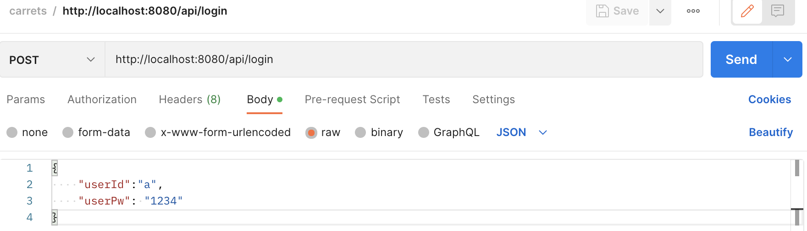

진행상황
Backend Server 완료
아래는 Kafka Backend Server 세팅 클래스 및 기능들이다.
- MessageListener : 실제 메세지 내부 로직 수행
- KafkaTopicConst : 토픽을 application-properties에서 로드
- KafkaTopicConfig : 토픽 등록
- KafkaConsumerConfig : 메세지 수신 그룹 및 타입 설정
- KafkaProducerConfig : 메세지 발신 설정
- KafkaAdminConfig : 카프카 연결
테스트(Login)
메세지 전송 
메세지 수신
1 2 3 4
# 직접 메세지 소비 [appuser@1ec915a5c4a5 ~]$ kafka-console-consumer --bootstrap-server localhost:9092 --topic login-response {"userId":"a","isSuccess":true,"errorMessage":"","user":{"userId":"a","userPw":"1234","email":"a@naver.com","userName":"user_A","userStatus":"바뀐 status message","joinDate":[2022,12,17],"loginDate":[2022,12,22],"logoutDate":[2022,12,17]}}
Kafka 코드
1
2
3
4
5
6
7
8
9
10
11
12
13
14
15
16
17
18
19
20
21
22
23
24
25
26
27
28
29
30
31
32
33
34
35
36
37
38
39
40
41
42
43
44
45
46
47
48
49
50
51
52
53
54
55
56
57
58
59
60
61
62
63
64
65
66
67
68
69
70
71
72
73
74
75
76
77
78
79
80
81
82
83
84
85
86
87
88
89
90
91
92
93
94
95
96
97
98
99
100
101
102
103
104
105
106
107
108
109
110
111
112
113
114
115
116
117
118
119
120
121
122
123
124
125
126
127
128
129
130
131
132
133
134
135
136
137
138
139
140
141
142
143
144
145
146
147
148
149
150
151
152
153
154
155
156
157
158
159
160
161
162
163
164
165
166
167
168
169
170
171
172
173
174
175
176
177
@Slf4j
@Component
public class MessageListener extends KafkaTopicConst{
private final KafkaTemplate<String, Object> kafkaProducerTemplate;
private final UserService userService;
private final FriendService friendService;
private final RoomService roomService;
private final ChatService chatService;
public MessageListener(KafkaTemplate<String, Object> kafkaProducerTemplate, UserService userService, FriendService friendService, RoomService roomService, ChatService chatService) {
this.kafkaProducerTemplate = kafkaProducerTemplate;
this.userService = userService;
this.friendService = friendService;
this.roomService = roomService;
this.chatService = chatService;
}
// 로그인 요청
@KafkaListener(topics = "${kafka.topic-login-request}", containerFactory = "loginKafkaListenerContainerFactory")
public void listenLogin(RequestLoginDTO req) {
log.info("Receive [RequestLoginDTO] Message with userId={},userPw={}",req.getUserId(),req.getUserPw());
ResponseLoginDTO resp = userService.login(req.getUserId(), req.getUserPw());
// Kafka 메세지 전송/비동기 처리를 위한 ListenableFuture 사용
ListenableFuture<SendResult<String, Object>> future = kafkaProducerTemplate.send(TOPIC_LOGIN_RESPONSE, req.getUserId(),resp);
listenFuture(future); // 메시지 비동기 callback 처리
}
// 로그아웃 요청
@KafkaListener(topics = "${kafka.topic-logout-request}", containerFactory = "logoutKafkaListenerContainerFactory")
public void listenLogin(@Payload String userId) {
ResponseLogoutDTO resp = userService.logout(userId);
ListenableFuture<SendResult<String, Object>> future = kafkaProducerTemplate.send(TOPIC_LOGOUT_RESPONSE, userId, resp);
listenFuture(future);
}
// 유저 참여 채팅방 목록 조회
@KafkaListener(topics = "${kafka.topic-user-search-room-request}", containerFactory = "userRoomKafkaListenerContainerFactory")
public void rooms(RequestUserRoomDTO req){
ResponseUserRoomDTO resp = userService.findAllMyRooms(req.getUserId());
ListenableFuture<SendResult<String, Object>> future = kafkaProducerTemplate.send(TOPIC_USER_SEARCH_ROOM_RESPONSE, req.getUserId(),resp);
listenFuture(future);
}
// 유저의 친구목록 조회
@KafkaListener(topics = "${kafka.topic-user-search-friend-request}", containerFactory = "userSearchFriendKafkaListenerContainerFactory")
public void findFriend(RequestUserFriendDTO req){
String userId = req.getUserId();
ResponseUserFriendDTO resp = new ResponseUserFriendDTO(userId);
Optional<User> findUser = userService.findById(userId);
if (!findUser.isPresent()){
resp.setStat(userId + "유저가 존재하지 않습니다");
}else{
List<Friend> friends = friendService.findAllByUserId(userId);
resp.setIsSuccess(true);
resp.setFriend(friends);
}
ListenableFuture<SendResult<String, Object>> future = kafkaProducerTemplate.send(TOPIC_USER_SEARCH_FRIEND_RESPONSE, req.getUserId(),resp);
listenFuture(future);
}
// 유저 저장
@KafkaListener(topics = "${kafka.topic-user-add-request}", containerFactory = "userAddKafkaListenerContainerFactory")
public void addUser(RequestAddUserDTO req){
User user = new User(
req.getUserId(),
req.getUserPw(),
req.getEmail(),
req.getUserName(),
"",
LocalDate.now(),
LocalDate.now(),
LocalDate.now()
);
ResponseAddUserDTO resp = userService.save(user);
ListenableFuture<SendResult<String, Object>> future = kafkaProducerTemplate.send(TOPIC_USER_ADD_RESPONSE, req.getUserId(),resp);
listenFuture(future);
}
// 유저 상태메세지 변경
@KafkaListener(topics = "${kafka.topic-user-status-change-request}", containerFactory = "userChangeStatusKafkaListenerContainerFactory")
public void changeUserStatus(RequestChangeUserStatusDTO req){
ResponseChangeUserStatusDTO resp = userService.updateUserStatus(req);
ListenableFuture<SendResult<String, Object>> future =
kafkaProducerTemplate.send(TOPIC_USER_STATUS_CHANGE_RESPONSE, req.getUserId(),resp);
listenFuture(future);
}
//채팅방 개설
@KafkaListener(topics = "${kafka.topic-user-add-room-request}", containerFactory = "userAddRoomKafkaListenerContainerFactory")
public void createRoomForm(RequestAddUserRoomDTO req){
ResponseAddUserRoomDTO resp = userService.makeRoomWithFriends(req);
ListenableFuture<SendResult<String, Object>> future =
kafkaProducerTemplate.send(TOPIC_USER_ADD_ROOM_RESPONSE, req.getUserId(),resp);
listenFuture(future);
}
// 채팅 저장
@KafkaListener(topics = "${kafka.topic-user-add-chat-request}", containerFactory = "userAddChatKafkaListenerContainerFactory")
public void chattingRoom(RequestAddChatMessageDTO req) {
Optional<Room> room = roomService.findByRoomId(req.getRoomId());
Optional<User> user = userService.findById(req.getWriterId());
ResponseAddChatMessageDTO resp = new ResponseAddChatMessageDTO(req.getRoomId(),req.getWriterId());
if (!room.isPresent()){
resp.setErrorMessage("채팅방이 존재하지 않습니다");
}
if(!user.isPresent()){
resp.setErrorMessage("유저가 존재하지 않습니다");
}
Chatting chat = createChatting(user.get(),room.get(),req.getMessage());
resp = chatService.save(chat);
ListenableFuture<SendResult<String, Object>> future =
kafkaProducerTemplate.send(TOPIC_USER_ADD_CHAT_RESPONSE, req.getWriterId(),resp);
listenFuture(future);
}
// 친구 저장
@KafkaListener(topics = "${kafka.topic-user-add-friend-request}", containerFactory = "userAddFriendKafkaListenerContainerFactory")
public void addFriend(RequestAddFriendDTO req){
List<String> friendIds = req.getFriendId();
ResponseAddFriendDTO resp = new ResponseAddFriendDTO(req.getUserId());
for(String friendId : friendIds){
Optional<User> findId = userService.findById(friendId);
if (!findId.isPresent()){
resp.setErrorMessage("유저가 존재하지 않습니다");
break;
}
friendService.save(req.getUserId(), friendId);
}
ListenableFuture<SendResult<String, Object>> future =
kafkaProducerTemplate.send(TOPIC_USER_ADD_FRIEND_RESPONSE, req.getUserId(),resp);
listenFuture(future);
}
// utils
private Chatting createChatting(User user,Room room, String message){
Chatting chat = new Chatting();
chat.setRoom(room);
chat.setSendUser(user);
chat.setCreatedDate(ZonedDateTime.now().toLocalDate());
chat.setCreatedTime(ZonedDateTime.now().toLocalTime());
chat.setMessage(message);
return chat;
}
private void listenFuture(ListenableFuture<SendResult<String, Object>> future) {
future.addCallback(new ListenableFutureCallback<SendResult<String, Object>>() {
@Override
public void onFailure(Throwable ex) {
log.error("메세지 전송 실패 : {}", ex.getMessage());
}
@Override
public void onSuccess(SendResult<String, Object> result) {
log.info("메세지 전송 성공 topic: {}, offset: {}, partition: {}",result.getRecordMetadata().topic() ,result.getRecordMetadata().offset(), result.getRecordMetadata().partition());
}
});
}
}
1
2
3
4
5
6
7
8
9
10
11
12
13
14
15
16
17
18
19
20
21
22
23
24
25
26
27
28
29
30
31
32
33
34
35
36
37
38
39
40
41
42
43
44
45
46
47
48
49
50
51
@Component
public class KafkaTopicConst {
@Value("${kafka.topic-login-request}")
public String TOPIC_LOGIN_REQUEST;
@Value("${kafka.topic-login-response}")
public String TOPIC_LOGIN_RESPONSE;
@Value("${kafka.topic-logout-request}")
public String TOPIC_LOGOUT_REQUEST;
@Value("${kafka.topic-logout-response}")
public String TOPIC_LOGOUT_RESPONSE;
@Value("${kafka.topic-user-search-room-request}")
public String TOPIC_USER_ROOM_REQUEST;
@Value("${kafka.topic-user-search-room-response}")
public String TOPIC_USER_ROOM_RESPONSE;
@Value("${kafka.topic-user-search-room-request}")
public String TOPIC_USER_SEARCH_ROOM_REQUEST;
@Value("${kafka.topic-user-search-room-response}")
public String TOPIC_USER_SEARCH_ROOM_RESPONSE;
@Value("${kafka.topic-user-search-friend-request}")
public String TOPIC_USER_SEARCH_FRIEND_REQUEST;
@Value("${kafka.topic-user-search-friend-response}")
public String TOPIC_USER_SEARCH_FRIEND_RESPONSE;
@Value("${kafka.topic-user-add-request}")
public String TOPIC_USER_ADD_REQUEST;
@Value("${kafka.topic-user-add-response}")
public String TOPIC_USER_ADD_RESPONSE;
@Value("${kafka.topic-user-status-change-request}")
public String TOPIC_USER_STATUS_CHANGE_REQUEST;
@Value("${kafka.topic-user-status-change-response}")
public String TOPIC_USER_STATUS_CHANGE_RESPONSE;
@Value("${kafka.topic-user-add-room-request}")
public String TOPIC_USER_ADD_ROOM_REQUEST;
@Value("${kafka.topic-user-add-room-response}")
public String TOPIC_USER_ADD_ROOM_RESPONSE;
@Value("${kafka.topic-user-add-chat-request}")
public String TOPIC_USER_ADD_CHAT_REQUEST;
@Value("${kafka.topic-user-add-chat-response}")
public String TOPIC_USER_ADD_CHAT_RESPONSE;
@Value("${kafka.topic-user-add-friend-request}")
public String TOPIC_USER_ADD_FRIEND_REQUEST;
@Value("${kafka.topic-user-add-friend-response}")
public String TOPIC_USER_ADD_FRIEND_RESPONSE;
}
1
2
3
4
5
6
7
8
9
10
11
12
13
14
15
16
17
18
19
20
21
22
23
24
25
26
27
28
29
30
31
32
33
34
35
36
37
38
39
40
41
42
43
44
45
46
47
@Configuration
public class KafkaTopicConfig extends KafkaTopicConst {
@Autowired
private KafkaAdmin kafkaAdmin;
// 계산 잘 해야한다. Partition 개수 >= Group내 Conusmer 개수
// 생성하고자 하는 Conumser=2 Partition은 2이기에, 각각 conusmer에게 leader-partition 매칭가능
private NewTopic generateTopic(String topicName,int partitionNum, int brokerNum) {
return TopicBuilder.name(topicName)
.partitions(partitionNum) // 할당하고자 하는 파티션 개수
.replicas(brokerNum) // replica sync를 위한 broker 개수
.build(); // 토픽은 총 2개의 leader-partition, 4개의 follow-partition 로 설정할 것임
}
@PostConstruct
public void init() {
kafkaAdmin.createOrModifyTopics(generateTopic(TOPIC_LOGIN_REQUEST,2,3));
kafkaAdmin.createOrModifyTopics(generateTopic(TOPIC_LOGIN_RESPONSE,2,3));
kafkaAdmin.createOrModifyTopics(generateTopic(TOPIC_LOGOUT_REQUEST,2,3));
kafkaAdmin.createOrModifyTopics(generateTopic(TOPIC_LOGOUT_RESPONSE,2,3));
kafkaAdmin.createOrModifyTopics(generateTopic(TOPIC_USER_ROOM_REQUEST,2,3));
kafkaAdmin.createOrModifyTopics(generateTopic(TOPIC_USER_ROOM_RESPONSE,2,3));
kafkaAdmin.createOrModifyTopics(generateTopic(TOPIC_USER_SEARCH_ROOM_REQUEST,2,3));
kafkaAdmin.createOrModifyTopics(generateTopic(TOPIC_USER_SEARCH_ROOM_RESPONSE,2,3));
kafkaAdmin.createOrModifyTopics(generateTopic(TOPIC_USER_SEARCH_FRIEND_REQUEST,2,3));
kafkaAdmin.createOrModifyTopics(generateTopic(TOPIC_USER_SEARCH_FRIEND_RESPONSE,2,3));
kafkaAdmin.createOrModifyTopics(generateTopic(TOPIC_USER_ADD_REQUEST,5,3));
kafkaAdmin.createOrModifyTopics(generateTopic(TOPIC_USER_ADD_RESPONSE,5,3));
kafkaAdmin.createOrModifyTopics(generateTopic(TOPIC_USER_STATUS_CHANGE_REQUEST,2,3));
kafkaAdmin.createOrModifyTopics(generateTopic(TOPIC_USER_STATUS_CHANGE_RESPONSE,2,3));
kafkaAdmin.createOrModifyTopics(generateTopic(TOPIC_USER_ADD_ROOM_REQUEST,2,3));
kafkaAdmin.createOrModifyTopics(generateTopic(TOPIC_USER_ADD_ROOM_RESPONSE,2,3));
kafkaAdmin.createOrModifyTopics(generateTopic(TOPIC_USER_ADD_CHAT_REQUEST,2,3));
kafkaAdmin.createOrModifyTopics(generateTopic(TOPIC_USER_ADD_CHAT_RESPONSE,2,3));
kafkaAdmin.createOrModifyTopics(generateTopic(TOPIC_USER_ADD_FRIEND_REQUEST,2,3));
kafkaAdmin.createOrModifyTopics(generateTopic(TOPIC_USER_ADD_FRIEND_RESPONSE,2,3));
}
}
1
2
3
4
5
6
7
8
9
10
11
12
13
14
15
16
17
18
19
20
21
22
@Configuration
@EnableKafka
public class KafkaProducerConfig {
@Value("${kafka.bootstrap-servers}")
private String bootstrapServer;
private ProducerFactory<String, Object> producerFactory() {
Map<String, Object> configProps = new HashMap<>();
configProps.put(ProducerConfig.BOOTSTRAP_SERVERS_CONFIG, bootstrapServer);
configProps.put(ProducerConfig.KEY_SERIALIZER_CLASS_CONFIG, StringSerializer.class);
configProps.put(ProducerConfig.VALUE_SERIALIZER_CLASS_CONFIG, JsonSerializer.class);
return new DefaultKafkaProducerFactory<>(configProps);
}
@Bean
public KafkaTemplate<String, Object> kafkaProducerTemplate() {
return new KafkaTemplate<>(producerFactory());
}
}
1
2
3
4
5
6
7
8
9
10
11
12
13
14
15
16
17
18
19
20
21
22
23
24
25
26
27
28
29
30
31
32
33
34
35
36
37
38
39
40
41
42
43
44
45
46
47
48
49
50
51
52
53
54
55
56
57
58
59
60
61
62
63
64
65
66
67
68
69
70
71
72
73
74
75
76
77
78
79
80
81
82
83
84
85
86
87
88
89
90
91
@Slf4j
@EnableKafka
@Configuration
public class KafkaConsumerConfig {
@Value("${kafka.bootstrap-servers}")
private String bootstrapServer;
// 로그인 요청
@Bean
public ConcurrentKafkaListenerContainerFactory<String, RequestLoginDTO> loginKafkaListenerContainerFactory() {
return getContainerFactory("defaultGroup",RequestLoginDTO.class);
}
// 로그아웃
@Bean
public ConcurrentKafkaListenerContainerFactory<String, String> logoutKafkaListenerContainerFactory() {
return getContainerFactory("defaultGroup",String.class);
}
// 유저 참여 채팅방 목록 조회
@Bean
public ConcurrentKafkaListenerContainerFactory<String, RequestUserRoomDTO> userRoomKafkaListenerContainerFactory() {
return getContainerFactory("defaultGroup",RequestUserRoomDTO.class);
}
// 유저 친구목록 조회
@Bean
public ConcurrentKafkaListenerContainerFactory<String, RequestUserFriendDTO> userSearchFriendKafkaListenerContainerFactory() {
return getContainerFactory("defaultGroup",RequestUserFriendDTO.class);
}
// 유저 저장
@Bean
public ConcurrentKafkaListenerContainerFactory<String, RequestAddUserDTO> userAddKafkaListenerContainerFactory() {
return getContainerFactory("defaultGroup",RequestAddUserDTO.class);
}
// 유저 상태메세지 변경
@Bean
public ConcurrentKafkaListenerContainerFactory<String, RequestChangeUserStatusDTO> userChangeStatusKafkaListenerContainerFactory() {
return getContainerFactory("defaultGroup",RequestChangeUserStatusDTO.class);
}
// 채팅방 개설
@Bean
public ConcurrentKafkaListenerContainerFactory<String, RequestAddUserRoomDTO> userAddRoomKafkaListenerContainerFactory() {
return getContainerFactory("defaultGroup",RequestAddUserRoomDTO.class);
}
// 채팅 저장
@Bean
public ConcurrentKafkaListenerContainerFactory<String, RequestAddChatMessageDTO> userAddChatKafkaListenerContainerFactory() {
return getContainerFactory("defaultGroup",RequestAddChatMessageDTO.class);
}
// 유저 친구 저장
@Bean
public ConcurrentKafkaListenerContainerFactory<String, RequestAddFriendDTO> userAddFriendKafkaListenerContainerFactory() {
return getContainerFactory("defaultGroup",RequestAddFriendDTO.class);
}
/**
* 유틸 목록 - 제네릭 클래스로 여러메소드에서 중복사용가능하도록 유틸화하였다.
* --Methods--
* getContainerFactory()
* getKafkaConsumerFactory()
* setConfig()
* setDeserializer()
*/
private <T> ConcurrentKafkaListenerContainerFactory<String, T> getContainerFactory(String groupId, Class<T> classType) {
ConcurrentKafkaListenerContainerFactory<String, T> factory = new ConcurrentKafkaListenerContainerFactory<>();
factory.setConsumerFactory(getKafkaConsumerFactory(groupId, classType));
return factory;
}
private <T> DefaultKafkaConsumerFactory<String, T> getKafkaConsumerFactory(String groupId,Class<T> classType) {
JsonDeserializer<T> deserializer = setDeserializer(classType);
return new DefaultKafkaConsumerFactory<>(setConfig(groupId, deserializer), new StringDeserializer(), deserializer);
}
private <T> ImmutableMap<String, Object> setConfig(String groupId, JsonDeserializer<T> deserializer) {
ImmutableMap<String, Object> config = ImmutableMap.<String, Object>builder()
.put(ConsumerConfig.BOOTSTRAP_SERVERS_CONFIG, bootstrapServer)
.put(ConsumerConfig.KEY_DESERIALIZER_CLASS_CONFIG, StringDeserializer.class)
.put(ConsumerConfig.GROUP_ID_CONFIG, groupId)
.put(ConsumerConfig.VALUE_DESERIALIZER_CLASS_CONFIG, deserializer)
.build();
return config;
}
private <T> JsonDeserializer<T> setDeserializer(Class<T> classType) {
JsonDeserializer<T> deserializer = new JsonDeserializer<>(classType);
deserializer.setRemoveTypeHeaders(false);
deserializer.addTrustedPackages("*");
deserializer.setUseTypeMapperForKey(true);
return deserializer;
}
}
1
2
3
4
5
6
7
8
9
10
11
12
13
14
@Configuration
public class KafkaAdminConfig {
@Value("${kafka.bootstrap-servers}")
private String bootstrapServer;
@Bean
public KafkaAdmin kafkaAdmin() {
Map<String, Object> configs = new HashMap<>();
configs.put(AdminClientConfig.BOOTSTRAP_SERVERS_CONFIG, bootstrapServer);
return new KafkaAdmin(configs);
}
}
이 밖에 많은수의 데이터 발신/수신 포멧들과 서비스들이 연계되어 사용된다.
Frontend Server 진행중
Backend 개발 이후 세션과 페이지를 관리하는 Frontend Server을 개발중에 있다. 이 과정에서 고려할 몇가지를 추가하려 한다.
- Server-Sent Event로 진행
이전 계획은 Frontend Server에서 webClient로 HTTP 비동기-nonBlocking 수신하려하였지만, backend에서 HTTP를 통하지 않고 직접 토픽 내 메세지 수신으로 바꾸었기에 수정이 필요하다.
수정 이후 예상되는 전체 flow는 다음과 같다.
수정된 Flow(로그인 예시)
- 클라이언트 브라우저에서 GET /login FrontServer에 전송.
- Front Server에서 SSE 모델 전송 및 유저인증 메시지 Kafka에 login-request 토픽으로 전달
- 클라이언트 브라우저에서 SSE 이벤트 수신 이전 로그인 로딩창 확인
- Backend Server에서 Kafka메세지 수신 및 인증로직 수행 이후 login-response 토픽에 전달
- Front Server는 이를 수신 및 SSE 이벤트 클라이언트 브라우저에 전달
- 클라이언트는 비로소 로그인 성공화면 redirect